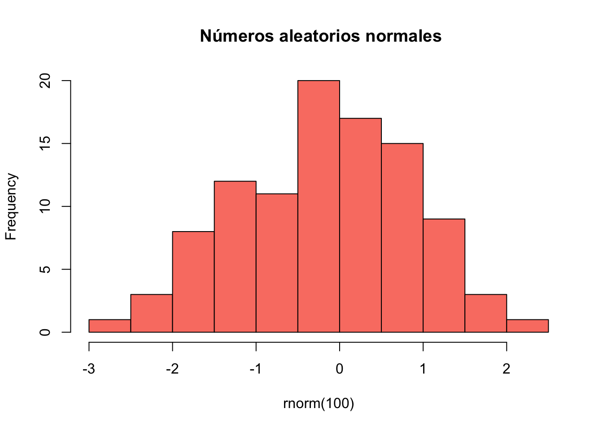

Código
1+3[1] 4Código
4-5[1] -1Código
2*3[1] 6Código
4/5[1] 0.8Código
2^3[1] 8Código
1/(1/(1+2)^2)[1] 9R es un lenguaje de programación gratuito y de código abierto dedicado a los procedimientos estadísticos. RStudio es un IDE Integrated Development Environment dedicado a R.
En R se pueden hacer cálculos como en una calculadora
1+3[1] 44-5[1] -12*3[1] 64/5[1] 0.82^3[1] 81/(1/(1+2)^2)[1] 9Al hacer comparaciones lógicas se obtiene TRUE o FALSE.
1 == 2 # ¿es igual?[1] FALSE3 != 4 # ¿es diferente?[1] TRUEpi > 4 # ¿es mayor?[1] FALSEtypeof(1L) #entero[1] "integer"typeof(1) #entero[1] "double"typeof(3.5) #real[1] "double"typeof("abc") # cadena[1] "character"typeof(TRUE) #lógico o Booleano[1] "logical"En R todo es un objeto y se les puede asignar un nombre. Un número es un objeto, una suma es un objeto, un vector es un objeto, una imagen es un objeto, un histograma es un objeto, … y se les puede asignar un nombre con <-, -> o =. Ejemplos:
a <- 5
numero1 = 8
histo <- hist(rnorm(100),main=" Números aleatorios normales",col="salmon")
7.3 -> bLos nombres pueden ser cortos o largos, no deben comenzar por números o caracteres especiales y no deben contener espacios.
Los datos pueden venir presentados en vectores, listas,matrices, dataframes, etc.
Un vector es una colección de uno o más datos del mismo tipo. La función c() se utiliza para encadenar elementos y vectores. Ejemplos de vectores:
v1 <- c(1,2,3,4,5)
v2 <- c(TRUE, TRUE,FALSE)
edad <- c(20,21,20,18,20.5)
v3 <- 1:5
v3[1] 1 2 3 4 5v4 <- c(c(1,2,3),c(4,5,6))
v4[1] 1 2 3 4 5 6v5 <- seq(2,34,5)
v5[1] 2 7 12 17 22 27 32v6 <- c(4,5,6)
v1 + v6Warning in v1 + v6: longer object length is not a multiple of shorter object
length[1] 5 7 9 8 10v7 <- c(1,TRUE,"a")
v8 <- c(NA,1,2,NA,8)
complete.cases(v8)[1] FALSE TRUE TRUE FALSE TRUEwhich.max(edad)[1] 2edad[which.max(edad)][1] 21edad[3][1] 20edad[3:5][1] 20.0 18.0 20.5is.vector(v1)[1] TRUETodos los objetos tienen un tipo:
typeof(v1)[1] "double"typeof(v2)[1] "logical"typeof(edad)[1] "double"class(v1)[1] "numeric"class(edad)[1] "numeric"typeof(v7)[1] "character"typeof(v8)[1] "double"mean(v8)[1] NAmean(v8,na.rm=TRUE)[1] 3.6666673:45 [1] 3 4 5 6 7 8 9 10 11 12 13 14 15 16 17 18 19 20 21 22 23 24 25 26 27
[26] 28 29 30 31 32 33 34 35 36 37 38 39 40 41 42 43 44 4599:1 [1] 99 98 97 96 95 94 93 92 91 90 89 88 87 86 85 84 83 82 81 80 79 78 77 76 75
[26] 74 73 72 71 70 69 68 67 66 65 64 63 62 61 60 59 58 57 56 55 54 53 52 51 50
[51] 49 48 47 46 45 44 43 42 41 40 39 38 37 36 35 34 33 32 31 30 29 28 27 26 25
[76] 24 23 22 21 20 19 18 17 16 15 14 13 12 11 10 9 8 7 6 5 4 3 2 1letters [1] "a" "b" "c" "d" "e" "f" "g" "h" "i" "j" "k" "l" "m" "n" "o" "p" "q" "r" "s"
[20] "t" "u" "v" "w" "x" "y" "z"LETTERS [1] "A" "B" "C" "D" "E" "F" "G" "H" "I" "J" "K" "L" "M" "N" "O" "P" "Q" "R" "S"
[20] "T" "U" "V" "W" "X" "Y" "Z"colors() [1] "white" "aliceblue" "antiquewhite"
[4] "antiquewhite1" "antiquewhite2" "antiquewhite3"
[7] "antiquewhite4" "aquamarine" "aquamarine1"
[10] "aquamarine2" "aquamarine3" "aquamarine4"
[13] "azure" "azure1" "azure2"
[16] "azure3" "azure4" "beige"
[19] "bisque" "bisque1" "bisque2"
[22] "bisque3" "bisque4" "black"
[25] "blanchedalmond" "blue" "blue1"
[28] "blue2" "blue3" "blue4"
[31] "blueviolet" "brown" "brown1"
[34] "brown2" "brown3" "brown4"
[37] "burlywood" "burlywood1" "burlywood2"
[40] "burlywood3" "burlywood4" "cadetblue"
[43] "cadetblue1" "cadetblue2" "cadetblue3"
[46] "cadetblue4" "chartreuse" "chartreuse1"
[49] "chartreuse2" "chartreuse3" "chartreuse4"
[52] "chocolate" "chocolate1" "chocolate2"
[55] "chocolate3" "chocolate4" "coral"
[58] "coral1" "coral2" "coral3"
[61] "coral4" "cornflowerblue" "cornsilk"
[64] "cornsilk1" "cornsilk2" "cornsilk3"
[67] "cornsilk4" "cyan" "cyan1"
[70] "cyan2" "cyan3" "cyan4"
[73] "darkblue" "darkcyan" "darkgoldenrod"
[76] "darkgoldenrod1" "darkgoldenrod2" "darkgoldenrod3"
[79] "darkgoldenrod4" "darkgray" "darkgreen"
[82] "darkgrey" "darkkhaki" "darkmagenta"
[85] "darkolivegreen" "darkolivegreen1" "darkolivegreen2"
[88] "darkolivegreen3" "darkolivegreen4" "darkorange"
[91] "darkorange1" "darkorange2" "darkorange3"
[94] "darkorange4" "darkorchid" "darkorchid1"
[97] "darkorchid2" "darkorchid3" "darkorchid4"
[100] "darkred" "darksalmon" "darkseagreen"
[103] "darkseagreen1" "darkseagreen2" "darkseagreen3"
[106] "darkseagreen4" "darkslateblue" "darkslategray"
[109] "darkslategray1" "darkslategray2" "darkslategray3"
[112] "darkslategray4" "darkslategrey" "darkturquoise"
[115] "darkviolet" "deeppink" "deeppink1"
[118] "deeppink2" "deeppink3" "deeppink4"
[121] "deepskyblue" "deepskyblue1" "deepskyblue2"
[124] "deepskyblue3" "deepskyblue4" "dimgray"
[127] "dimgrey" "dodgerblue" "dodgerblue1"
[130] "dodgerblue2" "dodgerblue3" "dodgerblue4"
[133] "firebrick" "firebrick1" "firebrick2"
[136] "firebrick3" "firebrick4" "floralwhite"
[139] "forestgreen" "gainsboro" "ghostwhite"
[142] "gold" "gold1" "gold2"
[145] "gold3" "gold4" "goldenrod"
[148] "goldenrod1" "goldenrod2" "goldenrod3"
[151] "goldenrod4" "gray" "gray0"
[154] "gray1" "gray2" "gray3"
[157] "gray4" "gray5" "gray6"
[160] "gray7" "gray8" "gray9"
[163] "gray10" "gray11" "gray12"
[166] "gray13" "gray14" "gray15"
[169] "gray16" "gray17" "gray18"
[172] "gray19" "gray20" "gray21"
[175] "gray22" "gray23" "gray24"
[178] "gray25" "gray26" "gray27"
[181] "gray28" "gray29" "gray30"
[184] "gray31" "gray32" "gray33"
[187] "gray34" "gray35" "gray36"
[190] "gray37" "gray38" "gray39"
[193] "gray40" "gray41" "gray42"
[196] "gray43" "gray44" "gray45"
[199] "gray46" "gray47" "gray48"
[202] "gray49" "gray50" "gray51"
[205] "gray52" "gray53" "gray54"
[208] "gray55" "gray56" "gray57"
[211] "gray58" "gray59" "gray60"
[214] "gray61" "gray62" "gray63"
[217] "gray64" "gray65" "gray66"
[220] "gray67" "gray68" "gray69"
[223] "gray70" "gray71" "gray72"
[226] "gray73" "gray74" "gray75"
[229] "gray76" "gray77" "gray78"
[232] "gray79" "gray80" "gray81"
[235] "gray82" "gray83" "gray84"
[238] "gray85" "gray86" "gray87"
[241] "gray88" "gray89" "gray90"
[244] "gray91" "gray92" "gray93"
[247] "gray94" "gray95" "gray96"
[250] "gray97" "gray98" "gray99"
[253] "gray100" "green" "green1"
[256] "green2" "green3" "green4"
[259] "greenyellow" "grey" "grey0"
[262] "grey1" "grey2" "grey3"
[265] "grey4" "grey5" "grey6"
[268] "grey7" "grey8" "grey9"
[271] "grey10" "grey11" "grey12"
[274] "grey13" "grey14" "grey15"
[277] "grey16" "grey17" "grey18"
[280] "grey19" "grey20" "grey21"
[283] "grey22" "grey23" "grey24"
[286] "grey25" "grey26" "grey27"
[289] "grey28" "grey29" "grey30"
[292] "grey31" "grey32" "grey33"
[295] "grey34" "grey35" "grey36"
[298] "grey37" "grey38" "grey39"
[301] "grey40" "grey41" "grey42"
[304] "grey43" "grey44" "grey45"
[307] "grey46" "grey47" "grey48"
[310] "grey49" "grey50" "grey51"
[313] "grey52" "grey53" "grey54"
[316] "grey55" "grey56" "grey57"
[319] "grey58" "grey59" "grey60"
[322] "grey61" "grey62" "grey63"
[325] "grey64" "grey65" "grey66"
[328] "grey67" "grey68" "grey69"
[331] "grey70" "grey71" "grey72"
[334] "grey73" "grey74" "grey75"
[337] "grey76" "grey77" "grey78"
[340] "grey79" "grey80" "grey81"
[343] "grey82" "grey83" "grey84"
[346] "grey85" "grey86" "grey87"
[349] "grey88" "grey89" "grey90"
[352] "grey91" "grey92" "grey93"
[355] "grey94" "grey95" "grey96"
[358] "grey97" "grey98" "grey99"
[361] "grey100" "honeydew" "honeydew1"
[364] "honeydew2" "honeydew3" "honeydew4"
[367] "hotpink" "hotpink1" "hotpink2"
[370] "hotpink3" "hotpink4" "indianred"
[373] "indianred1" "indianred2" "indianred3"
[376] "indianred4" "ivory" "ivory1"
[379] "ivory2" "ivory3" "ivory4"
[382] "khaki" "khaki1" "khaki2"
[385] "khaki3" "khaki4" "lavender"
[388] "lavenderblush" "lavenderblush1" "lavenderblush2"
[391] "lavenderblush3" "lavenderblush4" "lawngreen"
[394] "lemonchiffon" "lemonchiffon1" "lemonchiffon2"
[397] "lemonchiffon3" "lemonchiffon4" "lightblue"
[400] "lightblue1" "lightblue2" "lightblue3"
[403] "lightblue4" "lightcoral" "lightcyan"
[406] "lightcyan1" "lightcyan2" "lightcyan3"
[409] "lightcyan4" "lightgoldenrod" "lightgoldenrod1"
[412] "lightgoldenrod2" "lightgoldenrod3" "lightgoldenrod4"
[415] "lightgoldenrodyellow" "lightgray" "lightgreen"
[418] "lightgrey" "lightpink" "lightpink1"
[421] "lightpink2" "lightpink3" "lightpink4"
[424] "lightsalmon" "lightsalmon1" "lightsalmon2"
[427] "lightsalmon3" "lightsalmon4" "lightseagreen"
[430] "lightskyblue" "lightskyblue1" "lightskyblue2"
[433] "lightskyblue3" "lightskyblue4" "lightslateblue"
[436] "lightslategray" "lightslategrey" "lightsteelblue"
[439] "lightsteelblue1" "lightsteelblue2" "lightsteelblue3"
[442] "lightsteelblue4" "lightyellow" "lightyellow1"
[445] "lightyellow2" "lightyellow3" "lightyellow4"
[448] "limegreen" "linen" "magenta"
[451] "magenta1" "magenta2" "magenta3"
[454] "magenta4" "maroon" "maroon1"
[457] "maroon2" "maroon3" "maroon4"
[460] "mediumaquamarine" "mediumblue" "mediumorchid"
[463] "mediumorchid1" "mediumorchid2" "mediumorchid3"
[466] "mediumorchid4" "mediumpurple" "mediumpurple1"
[469] "mediumpurple2" "mediumpurple3" "mediumpurple4"
[472] "mediumseagreen" "mediumslateblue" "mediumspringgreen"
[475] "mediumturquoise" "mediumvioletred" "midnightblue"
[478] "mintcream" "mistyrose" "mistyrose1"
[481] "mistyrose2" "mistyrose3" "mistyrose4"
[484] "moccasin" "navajowhite" "navajowhite1"
[487] "navajowhite2" "navajowhite3" "navajowhite4"
[490] "navy" "navyblue" "oldlace"
[493] "olivedrab" "olivedrab1" "olivedrab2"
[496] "olivedrab3" "olivedrab4" "orange"
[499] "orange1" "orange2" "orange3"
[502] "orange4" "orangered" "orangered1"
[505] "orangered2" "orangered3" "orangered4"
[508] "orchid" "orchid1" "orchid2"
[511] "orchid3" "orchid4" "palegoldenrod"
[514] "palegreen" "palegreen1" "palegreen2"
[517] "palegreen3" "palegreen4" "paleturquoise"
[520] "paleturquoise1" "paleturquoise2" "paleturquoise3"
[523] "paleturquoise4" "palevioletred" "palevioletred1"
[526] "palevioletred2" "palevioletred3" "palevioletred4"
[529] "papayawhip" "peachpuff" "peachpuff1"
[532] "peachpuff2" "peachpuff3" "peachpuff4"
[535] "peru" "pink" "pink1"
[538] "pink2" "pink3" "pink4"
[541] "plum" "plum1" "plum2"
[544] "plum3" "plum4" "powderblue"
[547] "purple" "purple1" "purple2"
[550] "purple3" "purple4" "red"
[553] "red1" "red2" "red3"
[556] "red4" "rosybrown" "rosybrown1"
[559] "rosybrown2" "rosybrown3" "rosybrown4"
[562] "royalblue" "royalblue1" "royalblue2"
[565] "royalblue3" "royalblue4" "saddlebrown"
[568] "salmon" "salmon1" "salmon2"
[571] "salmon3" "salmon4" "sandybrown"
[574] "seagreen" "seagreen1" "seagreen2"
[577] "seagreen3" "seagreen4" "seashell"
[580] "seashell1" "seashell2" "seashell3"
[583] "seashell4" "sienna" "sienna1"
[586] "sienna2" "sienna3" "sienna4"
[589] "skyblue" "skyblue1" "skyblue2"
[592] "skyblue3" "skyblue4" "slateblue"
[595] "slateblue1" "slateblue2" "slateblue3"
[598] "slateblue4" "slategray" "slategray1"
[601] "slategray2" "slategray3" "slategray4"
[604] "slategrey" "snow" "snow1"
[607] "snow2" "snow3" "snow4"
[610] "springgreen" "springgreen1" "springgreen2"
[613] "springgreen3" "springgreen4" "steelblue"
[616] "steelblue1" "steelblue2" "steelblue3"
[619] "steelblue4" "tan" "tan1"
[622] "tan2" "tan3" "tan4"
[625] "thistle" "thistle1" "thistle2"
[628] "thistle3" "thistle4" "tomato"
[631] "tomato1" "tomato2" "tomato3"
[634] "tomato4" "turquoise" "turquoise1"
[637] "turquoise2" "turquoise3" "turquoise4"
[640] "violet" "violetred" "violetred1"
[643] "violetred2" "violetred3" "violetred4"
[646] "wheat" "wheat1" "wheat2"
[649] "wheat3" "wheat4" "whitesmoke"
[652] "yellow" "yellow1" "yellow2"
[655] "yellow3" "yellow4" "yellowgreen" runif(200,6,9) [1] 6.528189 7.787025 6.379023 7.170316 8.496421 6.273304 8.300108 6.243227
[9] 6.436630 6.262459 6.530231 6.657234 6.182107 8.440964 7.507472 6.635774
[17] 6.555303 7.036502 7.023696 6.600510 8.723138 7.743254 8.227787 6.682937
[25] 7.928001 6.974417 8.372089 7.359891 8.457277 8.426432 6.397876 6.599202
[33] 7.058468 8.948410 8.518642 6.394472 8.141605 8.715594 8.334633 8.150658
[41] 6.755899 8.224076 6.020962 7.577408 6.073834 8.108532 8.688660 6.853521
[49] 8.858531 7.270666 7.467932 8.374650 7.821110 7.202690 8.127139 8.838759
[57] 6.782851 6.951178 6.165457 7.392681 6.049645 7.805356 6.136191 6.236231
[65] 8.751443 8.874848 8.440178 6.613624 8.411536 6.118096 6.735227 6.120098
[73] 7.537839 7.231096 6.607876 6.671383 6.526483 6.299846 8.492906 7.841917
[81] 6.367971 8.000446 8.309723 7.653902 8.271039 8.085599 8.823173 8.434979
[89] 6.394836 7.365920 7.043676 6.671135 8.414090 8.220794 6.971188 6.139855
[97] 7.357818 6.223771 7.221954 7.617680 7.344812 6.070259 8.980795 8.932841
[105] 7.845316 6.208888 8.675818 8.359781 6.785177 6.822420 8.924392 6.903701
[113] 7.265150 7.340997 6.380085 7.270011 8.845013 6.379717 7.488233 8.053486
[121] 6.996510 6.403407 7.018423 7.116758 6.643912 6.294228 7.298422 8.213345
[129] 8.630458 7.494179 8.934292 6.804010 8.900019 6.823348 8.861593 8.283214
[137] 6.431797 8.563643 8.621505 7.572563 6.360992 8.251401 8.235667 7.424972
[145] 8.727074 8.252547 6.354757 6.924164 7.878687 6.828337 6.657097 6.507214
[153] 8.810985 8.388800 6.681248 6.073690 7.639938 7.747746 6.567037 6.348891
[161] 8.224007 6.409048 6.387956 6.648063 8.366192 7.021634 6.978747 6.802482
[169] 8.749126 8.338939 7.001852 8.501045 7.139525 8.459581 7.363850 8.186991
[177] 6.442285 8.239935 7.369421 8.034559 7.044991 7.956146 6.403849 7.366626
[185] 6.193789 7.160352 8.818710 6.187687 6.514769 6.663047 7.116481 7.081086
[193] 7.886418 8.825074 6.417784 7.564855 6.511757 6.845862 6.668972 6.683224rep(2,5)[1] 2 2 2 2 2rep("a",4)[1] "a" "a" "a" "a"Los vectores del código anterior son muy extensos. Se añadió la opción #| results: hide para que no los imprima. Si quiere ver el comienzo y/o el final haga:
head(runif(200,6,9))[1] 7.474660 7.950730 8.695324 6.531051 8.752784 6.116601tail(LETTERS)[1] "U" "V" "W" "X" "Y" "Z"LETTERS[3:9][1] "C" "D" "E" "F" "G" "H" "I"tail(colors())[1] "yellow" "yellow1" "yellow2" "yellow3" "yellow4"
[6] "yellowgreen"vector <- c(2,3,4,5,4,3,2,3,4,5,6,7,8,9,1)
vector > 5 [1] FALSE FALSE FALSE FALSE FALSE FALSE FALSE FALSE FALSE FALSE TRUE TRUE
[13] TRUE TRUE FALSEvector[vector>5][1] 6 7 8 9length(vector)[1] 15sort(vector) [1] 1 2 2 3 3 3 4 4 4 5 5 6 7 8 9unique(vector)[1] 2 3 4 5 6 7 8 9 1table(vector)vector
1 2 3 4 5 6 7 8 9
1 2 3 3 2 1 1 1 1 rev(vector) [1] 1 9 8 7 6 5 4 3 2 3 4 5 4 3 2sum(vector)[1] 66prod(vector)[1] 522547200w1 <- c(1,2,3)
w2 <- c(3,4,5)
rbind(w1,w2) [,1] [,2] [,3]
w1 1 2 3
w2 3 4 5w1 + w2[1] 4 6 8w1 * w2[1] 3 8 15Una matriz es una ordenación rectangular de números reales. En R se pueden crear matrices, así:
m1 <- matrix(1:9, nrow=3)
m2 <- matrix(1:9, byrow=TRUE, nrow=3)
m3 <- matrix(c(11,-2,3.1,42),nrow=2)
m1;m2;m3 [,1] [,2] [,3]
[1,] 1 4 7
[2,] 2 5 8
[3,] 3 6 9 [,1] [,2] [,3]
[1,] 1 2 3
[2,] 4 5 6
[3,] 7 8 9 [,1] [,2]
[1,] 11 3.1
[2,] -2 42.0m2[2,][1] 4 5 6m2[,3][1] 3 6 9m2[2,3][1] 6colnames(m2) <- c("v1", "v2", "v3")
m2 v1 v2 v3
[1,] 1 2 3
[2,] 4 5 6
[3,] 7 8 9Una lista es un vector, muy especial, que contiene objetos de cualquier tipo y/o tamaño:
l1 <- list("matriz1"=m1, "matriz2"=m2, "vector1"=v1, "vector2"=v2,"numero"=1)
l1$matriz1
[,1] [,2] [,3]
[1,] 1 4 7
[2,] 2 5 8
[3,] 3 6 9
$matriz2
v1 v2 v3
[1,] 1 2 3
[2,] 4 5 6
[3,] 7 8 9
$vector1
[1] 1 2 3 4 5
$vector2
[1] TRUE TRUE FALSE
$numero
[1] 1l1$matriz2 v1 v2 v3
[1,] 1 2 3
[2,] 4 5 6
[3,] 7 8 9Un dataframe es una estructura de datos bidimensional que contiene en sus columnas las variables y en las filas los casos. Se diferencia de una matriz en que las columnas de un dataframe deben tener el mismo tipo de datos. Un dataframe puede contener datos faltantes: NA.
df1 <- data.frame(edad= c(20,23,26,30), peso=c(45,56,78,55),genero=c("m","f","f","m"))
typeof(df1)[1] "list"df1| edad | peso | genero |
|---|---|---|
| 20 | 45 | m |
| 23 | 56 | f |
| 26 | 78 | f |
| 30 | 55 | m |
filas <- df1$edad > 25
df1[filas,]| edad | peso | genero | |
|---|---|---|---|
| 3 | 26 | 78 | f |
| 4 | 30 | 55 | m |
mat <- matrix(1:50,nrow=10)
Mdf <- as.data.frame(mat)
Mdf| V1 | V2 | V3 | V4 | V5 |
|---|---|---|---|---|
| 1 | 11 | 21 | 31 | 41 |
| 2 | 12 | 22 | 32 | 42 |
| 3 | 13 | 23 | 33 | 43 |
| 4 | 14 | 24 | 34 | 44 |
| 5 | 15 | 25 | 35 | 45 |
| 6 | 16 | 26 | 36 | 46 |
| 7 | 17 | 27 | 37 | 47 |
| 8 | 18 | 28 | 38 | 48 |
| 9 | 19 | 29 | 39 | 49 |
| 10 | 20 | 30 | 40 | 50 |
dim(df1) # dimensión[1] 4 3length(df1) # total de datos[1] 3names(df1) # variables[1] "edad" "peso" "genero"head(df1) # primeras filas | edad | peso | genero |
|---|---|---|
| 20 | 45 | m |
| 23 | 56 | f |
| 26 | 78 | f |
| 30 | 55 | m |
tail(df1) # últimas filas| edad | peso | genero |
|---|---|---|
| 20 | 45 | m |
| 23 | 56 | f |
| 26 | 78 | f |
| 30 | 55 | m |
nrow(df1) # número de filas [1] 4ncol(df1) # número de columnas[1] 3summary(df1) # resumen de estadísticas edad peso genero
Min. :20.00 Min. :45.0 Length:4
1st Qu.:22.25 1st Qu.:52.5 Class :character
Median :24.50 Median :55.5 Mode :character
Mean :24.75 Mean :58.5
3rd Qu.:27.00 3rd Qu.:61.5
Max. :30.00 Max. :78.0 df1$edad[1] 20 23 26 30df1[1]| edad |
|---|
| 20 |
| 23 |
| 26 |
| 30 |
df1["edad"]| edad |
|---|
| 20 |
| 23 |
| 26 |
| 30 |
df1[,"edad"][1] 20 23 26 30df1[-2,]| edad | peso | genero | |
|---|---|---|---|
| 1 | 20 | 45 | m |
| 3 | 26 | 78 | f |
| 4 | 30 | 55 | m |
df1[[2]][1] 45 56 78 55df1[2,3][1] "f"df1[,-2]| edad | genero |
|---|---|
| 20 | m |
| 23 | f |
| 26 | f |
| 30 | m |
estatura <- c(158,160,172,180)
df2 <- cbind(df1,estatura)
df2| edad | peso | genero | estatura |
|---|---|---|---|
| 20 | 45 | m | 158 |
| 23 | 56 | f | 160 |
| 26 | 78 | f | 172 |
| 30 | 55 | m | 180 |
La función factor() de R categoriza una variable cualitativa.
# Creando un vector de datos cualitativos
x <- c("female", "male", "male", "female")
print(x)[1] "female" "male" "male" "female"# Convirtiendo el vector en factor
# nombre genero
genero <- factor(x)
print(genero)[1] female male male female
Levels: female maleis.factor(genero)[1] TRUELos dataframes convierten las variables cualitativas en factores.
El R básico tiene varios conjuntos de datos, en su mayoría dataframes, simplemente, escriba data() en la consola de R en RStudio para ver el listado de conjuntos de datos, o vea el siguiente código:
data_package = data(package="datasets")
datasets <- as.data.frame(data_package[[3]])$Item
datasets [1] "AirPassengers" "BJsales" "BJsales.lead (BJsales)"
[4] "BOD" "CO2" "ChickWeight"
[7] "DNase" "EuStockMarkets" "Formaldehyde"
[10] "HairEyeColor" "Harman23.cor" "Harman74.cor"
[13] "Indometh" "InsectSprays" "JohnsonJohnson"
[16] "LakeHuron" "LifeCycleSavings" "Loblolly"
[19] "Nile" "Orange" "OrchardSprays"
[22] "PlantGrowth" "Puromycin" "Seatbelts"
[25] "Theoph" "Titanic" "ToothGrowth"
[28] "UCBAdmissions" "UKDriverDeaths" "UKgas"
[31] "USAccDeaths" "USArrests" "USJudgeRatings"
[34] "USPersonalExpenditure" "UScitiesD" "VADeaths"
[37] "WWWusage" "WorldPhones" "ability.cov"
[40] "airmiles" "airquality" "anscombe"
[43] "attenu" "attitude" "austres"
[46] "beaver1 (beavers)" "beaver2 (beavers)" "cars"
[49] "chickwts" "co2" "crimtab"
[52] "discoveries" "esoph" "euro"
[55] "euro.cross (euro)" "eurodist" "faithful"
[58] "fdeaths (UKLungDeaths)" "freeny" "freeny.x (freeny)"
[61] "freeny.y (freeny)" "infert" "iris"
[64] "iris3" "islands" "ldeaths (UKLungDeaths)"
[67] "lh" "longley" "lynx"
[70] "mdeaths (UKLungDeaths)" "morley" "mtcars"
[73] "nhtemp" "nottem" "npk"
[76] "occupationalStatus" "precip" "presidents"
[79] "pressure" "quakes" "randu"
[82] "rivers" "rock" "sleep"
[85] "stack.loss (stackloss)" "stack.x (stackloss)" "stackloss"
[88] "state.abb (state)" "state.area (state)" "state.center (state)"
[91] "state.division (state)" "state.name (state)" "state.region (state)"
[94] "state.x77 (state)" "sunspot.month" "sunspot.year"
[97] "sunspots" "swiss" "treering"
[100] "trees" "uspop" "volcano"
[103] "warpbreaks" "women" iris <- iris
str(iris)'data.frame': 150 obs. of 5 variables:
$ Sepal.Length: num 5.1 4.9 4.7 4.6 5 5.4 4.6 5 4.4 4.9 ...
$ Sepal.Width : num 3.5 3 3.2 3.1 3.6 3.9 3.4 3.4 2.9 3.1 ...
$ Petal.Length: num 1.4 1.4 1.3 1.5 1.4 1.7 1.4 1.5 1.4 1.5 ...
$ Petal.Width : num 0.2 0.2 0.2 0.2 0.2 0.4 0.3 0.2 0.2 0.1 ...
$ Species : Factor w/ 3 levels "setosa","versicolor",..: 1 1 1 1 1 1 1 1 1 1 ...head(iris)| Sepal.Length | Sepal.Width | Petal.Length | Petal.Width | Species |
|---|---|---|---|---|
| 5.1 | 3.5 | 1.4 | 0.2 | setosa |
| 4.9 | 3.0 | 1.4 | 0.2 | setosa |
| 4.7 | 3.2 | 1.3 | 0.2 | setosa |
| 4.6 | 3.1 | 1.5 | 0.2 | setosa |
| 5.0 | 3.6 | 1.4 | 0.2 | setosa |
| 5.4 | 3.9 | 1.7 | 0.4 | setosa |